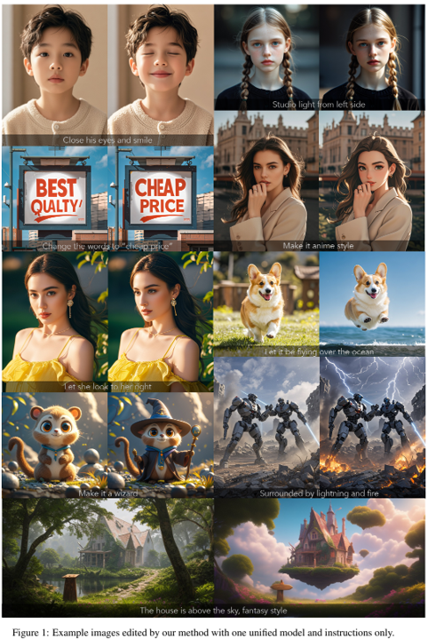
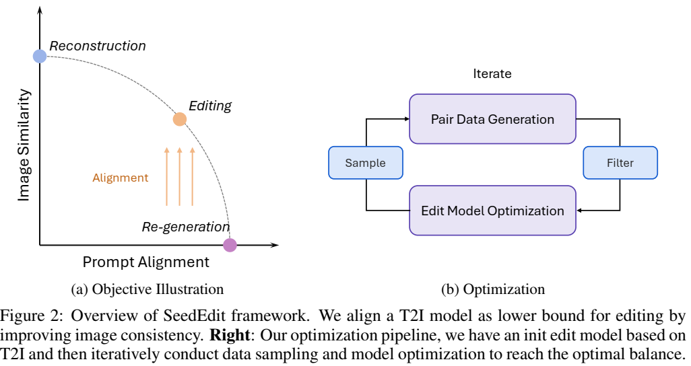
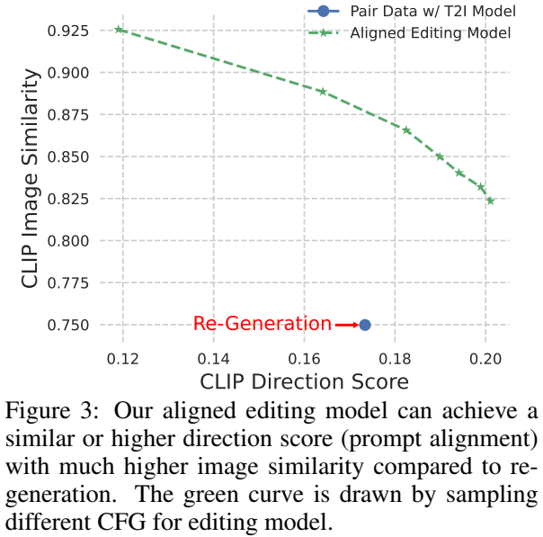
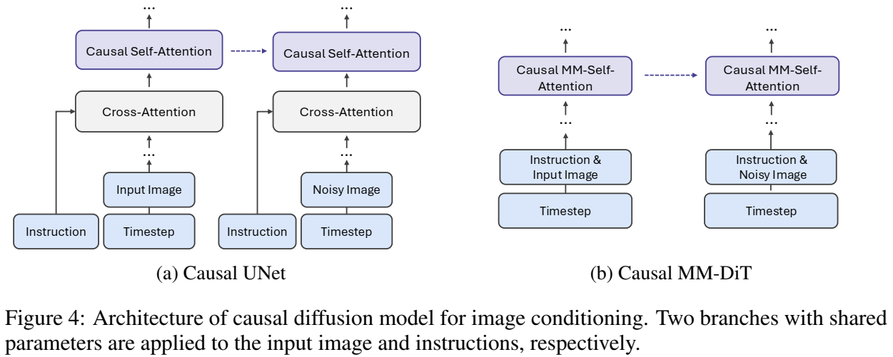
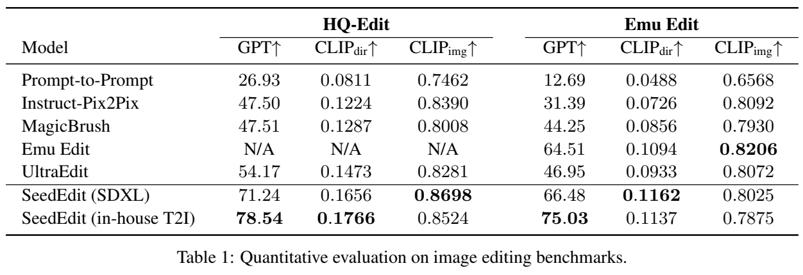
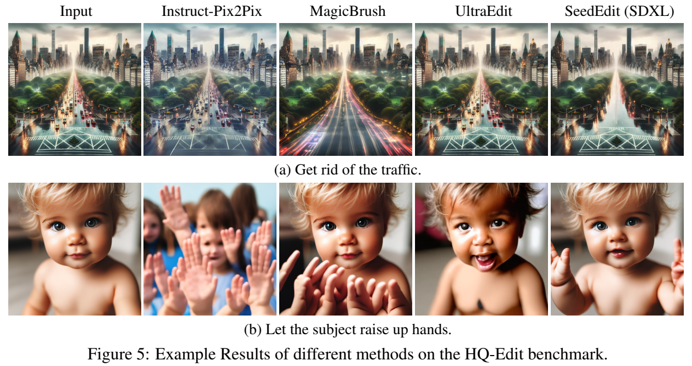
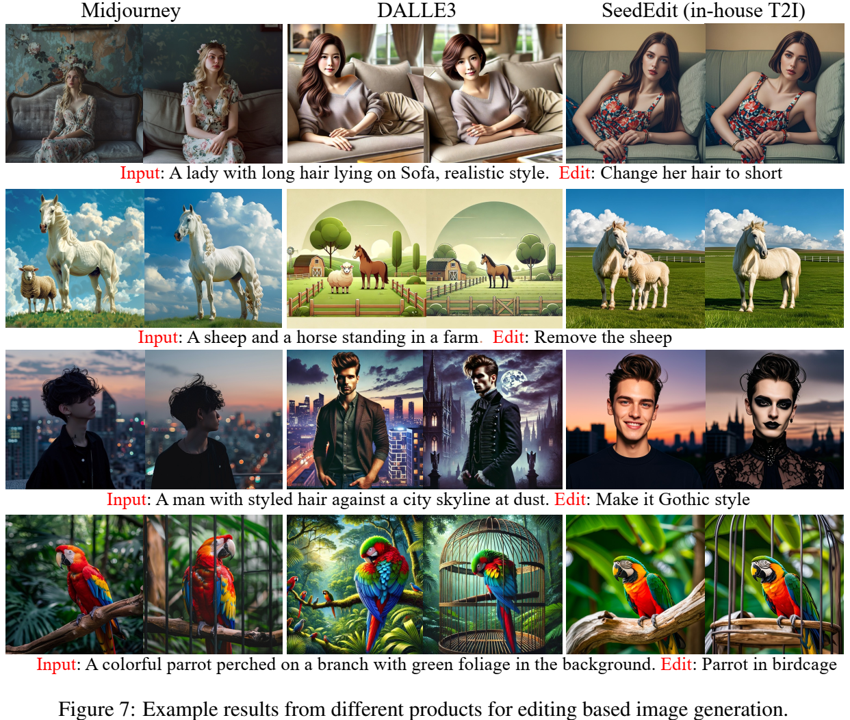

论文阅读二十六：SEEDEDIT：将图像重新生成与图像编辑对齐
摘要
我们引入SeedEdit，一个扩散模型，可以使用任意文本提示修改给定图像。在我们看来，这项任务的关键是在保持原始图像（即图像重建）和生成新图像（即，图像再生成）之间获得最佳平衡。为此，我们从一个弱生成器（文本到图像模型）开始，在这两个方向之间创建不同的对，并逐渐将其对齐为一个强图像编辑器，在两个任务之间实现良好的平衡。SeedEdit可以实现比以前的图像编辑方法更多样化、更稳定的编辑能力，从而能够对扩散模型生成的图像进行连续修改。我们的网站是 https://team.doubao.com/seededit 。
引言
今天的扩散模型可以仅从文本描述中创建真实和多样化的图像。然而，这些生成图像通常非常不可控，且一定程度上，生成过程就像抛硬币，直到出现一个好的输出。为了对生成的内容有更大的可控性，我们需要的功能是指导性图像编辑，即用文字说明修改输入的图像。这可以看作是图像生成和图像理解之间的交叉点，两者在今天都相当成熟。然而，到目前为止，图像编辑技术本身仍然远远落后于生成和理解。
现有的扩散模型图像编辑大致可分为两类。首先，无训练方法结合了诸如DDIM反演（Nichol等人，2021；Mokady等人，2023）、测试时间微调（Ruiz等人，2023；Kawar等人，2023年）、注意力控制（Cao等人，2023，Hertz等人，2022）等特定技术来重建输入图像，并使用新的文本引导生成新的图像。但是，由于重建和重建过程都存在不稳定性，这两者的组合会在编辑后的图像中累积更多的误差，这可能与输入图像或目标描述不一致。
第二类方法是数据驱动方法，其中准备大规模成对编辑数据集来训练教学扩散模型（Brooks et al.，2023；Zhang et al.，2024；Hui et al.，424；Wasserman et al.，024；赵et al.，1903）。然而，这里的主要困难是准备一个多样化和高质量的编辑数据集。与可以从互联网上大规模收集的图像数据集不同，图像编辑对非常罕见，几乎不可能收集到涵盖所有类型编辑对的高质量数据集。因此，现有的作品试图使用某些工具，如Prompt to Prompt（Hertz等人，2022）或绘画来创建这样的数据集。但因此，它们的性能受到这些数据创建工具的限制，而这些工具本身也不令人满意。
为了克服上述困难，我们引入了一种新的框架，将图像生成扩散模型转换为编辑图像的模型。我们认识到图像编辑本质上是图像重建和再生成之间的平衡，因此我们开发了一种管道，该管道首先生成分散到这两个方向的不同成对数据，然后逐渐对齐图像条件扩散模型，以在这两个任务之间达到最佳平衡。总的来说，它产生了一个能够用指令或描述修改图像的模型，我们称之为SeedEdit，与之前的研究相比，它具有更优的性能。

SEEDEDIT
图像编辑问题的核心难点是成对图像数据的稀缺。我们从对齐的角度解决这个问题。特别是，我们认为文本到图像（T2I）模型是一种弱编辑模型，它通过生成具有新提示的新图像来实现“编辑”。然后，我们通过最大限度地继承再生能力，同时提高图像一致性，将这种弱编辑模型提取并对齐为强编辑模型，如图2所示。

T2I模型用于编辑数据生成
我们初始编辑数据使用预训练的T2I模型作为编辑模型来生成的，其中编辑前后的图像对可以使用相应的文本描述来生成，类似于InstuctPix2Pix（Brooks等，2020）。有了这些数据，我们可以蒸馏一个T2I模型为图像条件编辑模型。然而，这种纯粹的再生成可能导致两个图像之间的不一致。为改进一致性，存在多种方法，如prompt-to-prompt（Hertz等，2022；Brooks等，2023）和注意力控制（Cao等，2023）。然而，这些技术生成非常有限的成对数据类型，难以覆盖图像编辑的全部类型。因此，我们结合不同的再生成技术和参数来创建一个更加多样化的数据集。具体地，我们生成更具随机性的大尺度成对数据集，来保证多样性，然后我应用过滤器来选择好的样本进行模型训练和对齐。表3展示了我们对齐的模型性能，比纯粹的基于CLIP指标的再生模好很多。

带有图像输入的因果扩散模型
我们的图像条件扩散模型的模型架构如表4所示。不同于先前研究，它们为图像条件添加额外输入通道（Brooks等，2023），我们为此重用自注意力，其中扩散模型的两个分支（共享参数）分别应用到输入和输出图像。这受到先前无训练方法（Cao等，2023）的启发，我们经验地发现这种架构在几何形变任务上表现更好，并引入较少的新参数。具体地，引入一个因果自注意力结构使得两个网络可以基于中间特征建立沟通。如果我们丢弃输入分支，它成为原始的T2I扩散模型，允许在编辑和T2I数据上混合训练。

迭代对齐
由于数据集有噪声，基于样本对训练的初始编辑模型可能对于应用程序来说不够稳健。即，像数据集本身，模型能够覆盖多样化的编辑任务，但仅有有限的成功率。为了进一步确保模型的稳健，我们提出渐进地对齐编辑模型，其通过添加额外的微调轮次。具体地，由于我们已经在次阶段有一个编辑模型，我们可以遵循数据生成得类似管道，基于当前模型准备一个新数据集合。结果然后再次标记和过滤来微调编辑模型，如章节2.2。我们重复这个过程多个轮次直到模型收敛，即，我们得指标不再改进。
实验
基准和指标
我们得实验中评估了两个基础模型，为SDXL（Podell等，2023）和一个基于DiT架构（Peebles & Xie,2023; Esser等，2024）的室内T2I模型。
我们使用两个公开数据集来评估图像编辑性能。（Hui等，2024）中提出的HQ-Edit数据集和来自（Sheynin等，2024）的Emu Edit数据集。前者包含293 Dalle3 生成的图像，后者包含535真实野外图像输入。我们注意到我们的方法主要侧重于在HQ-Edit基准中的应用场景，其中，我们希望使用任意指令修改T2I生成图像。Emu Edit与我们的训练数据十分不同，大多包含在真实图像上的局部编辑。因此，我们将Emu Edit作为领域外（OOD）测试，而主要依赖HQ-Edit来评估我们方法的应用潜力。
我们采用两个指标来评估编辑性能。第一个是基于CLIP的（Brooks等，2023），其中CLIP方向分数用于评估编辑提示的对齐，CLIP图像相似度用于测量一致性。第二种是LLM作为评估器，其中GPI用于替换CLIP方向分数来测量编辑成功性。
图像编辑比较
我们将我们的方法与一些先进的图像编辑方法，包括无训练方法Prompt-to-Prompt（Null-text Inversion）（Hertz等，2022；Mokady等，2023）和数据驱动方法Instruct-Pix2Pix（Brooks等，2023）、MagicBrush（Zhang等，2024）、Emu Edit（Sheynin等，2024）和UltraEdit（Zhao等，2024）。由于Emu Edit不是开源的，我们仅在器自身测试集上比较。对于其他方法，我们使用它们的带有默认参数的发布模型进行比较。表1展示了基准和我们方法的定量结果。总体上，我们的模型在两个基准上都展示了比开源基准明显更高的编辑分数。而且，我们还观察到在HQ-Edit数据集上较高的CLIP图像相似度，表明对于原始图像更好地内容保持。

虽然我们主要关注的是 HQ-Edit 中修改 T2I 图像的应用场景，但我们的方法在 Emu Edit 基准上也取得了不错的定量分数，与原始的 Emu Edit 方法相当/更好。然而，总的来说，我们观察到所有方法（包括我们的方法）生成的图像质量在 Emu Edit 基准上都不太令人满意，这证明了我们的信念，即在编辑任意野生图像之前，修改 T2I 图像可能是要解决的第一步。
图 5 展示了我们的方法和 HQ-Edit 基准上的基线的一些定性示例。我们的方法之间的一个主要区别是，我们的方法可以理解相当模糊的指令，并且在执行细粒度编辑时具有更高的成功率。

最后，我们将 SeedEdit（内部 T2I 模型）的图像编辑功能与其他商业 SoTA 工具（例如 DALLE3 Edit1 和 Midjourney2）进行比较，这些工具允许编辑自生成图像。图 7 显示了结果的定性比较。一般来说，DALLE3 和 Midjourney 都倾向于在指定的编辑提示之外引入更多意外的内容更改。在这两者之间，Midjourney 可以生成更美观的图像，而 DALLE3 则表现出对提示说明的出色遵守。相比之下，如最后一列所示，SeedEdit 达到了更好的平衡，提供了更精确的编辑，并严格遵循给定的说明。此外，我们进行了一项内部用户研究，表明用户强烈偏爱我们的方法生成的结果。

总结
在这项工作中，我们引入了 SeedEdit，这是一个渐进式对齐框架，用于将预训练的 T2I 扩散模型适配到图像编辑模型，从而最大限度地提高快速对齐和图像一致性。提出了一种因果扩散模型，将图像和文本作为图像生成的条件。提出了一种迭代数据生成和微调框架，以使扩散与精确的图像编辑保持一致。实验结果表明，与现有方法相比，我们的方法取得了很大的优势